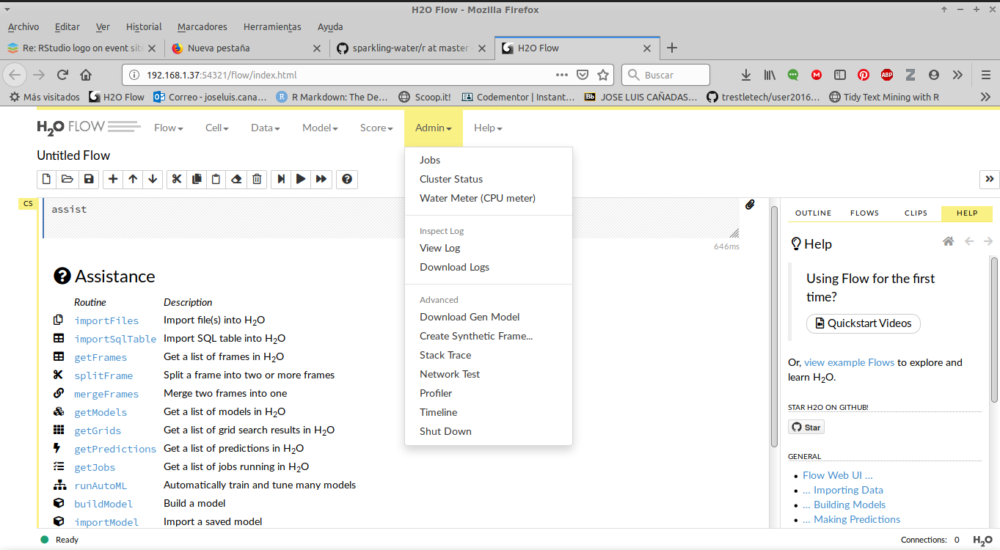

Agua con gas
O mejor dicho Sparkling Water , que es una librería de la buena gente de h2o que permite aunar el mundo spark con el mundo de h2o.
En un post anterior ya comentaba cómo poner modelos de h2o en producción en un cluster de spark, pero tengo que rectificar el punto en el que decía que con sparkling water había un cuello de botella al pasar de sparkdataframe a h2oframe, ese cuello ya no es tal, puesto que la conversión se hace en distribuido.
Antecedentes
En mi corta experiencia en el mundo del big data (2016- actualidad), en todos los sitios por los que paso se me presenta la disyuntiva de cómo pasar modelos a producción. Yo vengo del mundo de R y otra mucha gente del mundo de python y las soluciones que se nos ocurren son cosas basadas en docker, hacer udf’s dentro de spark o cosas así. Otra gente siempre me dice que lo que hay que usar es MLlib ya sea usando pyspark, sparkr, sparklyr o directamente la API con Scala (no conozco a nadie que use la API de Java), pero seamos honestos, los modelos implementados en MLlib son una basura, son lentos, consumen muchos recursos y dan peores resultados que los implementados con R o python por ejemplo.
Como dice el título de este blog “muestrear no es pecado” y a la hora de entrenar un modelo prefiero hacer 1000 muestreos aleatorios con reemplazamiento y ver la estabilidad de las predicciones e incluso sacar intervalos de confianza que cualquier otra cosa. Pero a todos nos piden implementar nuestros modelos (entrenamiento y predicción) en un entorno productivo.
Una posible solución (buena, bonita y barata)
Tal y como se cuenta en la comparativa que hace Szilard H2O es más eficiente que R, Python y Spark y con resultados iguales o mejores. Y un ingeniero me diría, -sí vale, muy bonito, pero yo lo que uso es spark y es lo que tenemos en el entorno de producción y no nos dejan instalar ni R, ni python, ni montar un cluster de h2o en los workers- . Pues aquí es dónde entra sparkling-water.
Con Sparkling Water tenemos lo mejor de los dos mundos, Spark para tratar los datos y h2o para entrenar modelos en distribuido y para predicción, y lo mejor de todo, podemos utilizar sparkling-water como si fuera una librería más de SPARK e incluirlo dentro de nuestras Apps sin ningún problema, con lo que el paso a producción es tan simple como con cualquier otro proceso de spark.
Otra ventaja es qué h2o y sparkling-water están ampliamente documentados, y por ejemplo aquí viene información de cómo utilizar en un EMR de Amazon, en Azure o en Google Cloud. Os recomiendo encarecidamente que leáis la docu, es una joya, así como los códigos de ejemplo que tienen en su github
Y bueno, después de tanto rollo y que parezco el comercial de la empresa voy a poner un ejemplo de cómo usar sparkling-water en spark con scala. En otro post lo comentaré con R.
Ejemplo con spark-scala
Vamos a probar funcionalidad con spark-shell, para construir una app en condiciones una opción sería crear el jar ya sea mediante sbt o con gradle, en un post anterior conté más o menos como era.
Lo primero es lanzar el spark-shell añadiendo el jar correspondiente de sparkling water, spark ya se encarga de distribuirlo entre los workers.
La prueba la hago sobre mi portátil aunque todo esto ya está probado sobre un cluster de spark tocho y funciona perfectamente. Habría que cambiar el modelo de ejecución a --master yarn y elegir más ejecutores y memoria.
La versión de sparkling-water correspondiente a cada versión de spark se puede consultar Aquí Yo voy a utilizar spark 2.4.0 y sparkling-water 2.4.10
Arrancamos un spark shell en modo local
/home/jose/spark/spark-2.4.0-bin-hadoop2.7/bin/spark-shell \
--jars /home/jose/Descargas/sparkling-water-2.4.10/assembly/build/libs/sparkling-water-assembly_2.11-2.4.10-all.jar \
--conf "spark.dynamicAllocation.enabled=false" \
--conf "spark.scheduler.minRegisteredResourcesRatio=1" --executor-memory 7G --executor-cores 2 --num-executors 1 \
--name sparkling_water_scala \
/Podemos ver el sparkui en http://127.0.0.1:4040/jobs/
Todo lo necesario para ejecutar h2o y su enlace con spark está en el jar sparkling-water-assembly_2.11-2.4.10-all.jar y al añadirlo al lanzar el spark-shell ya podemos utilizar h2o dentro de spark como una librería más.
Importamos librerías (no todas son necesarias)
import org.apache.spark.SparkFiles
import org.apache.spark.h2o._
import org.apache.spark.examples.h2o._
import org.apache.spark.ml.h2o.models._
import org.apache.spark.sql.functions._
import org.apache.spark.sql.{DataFrame, SQLContext}
import water.Key
import java.io.File
import java.net.URI
import _root_.hex.tree.gbm.GBM
import _root_.hex.tree.gbm.GBMModel
import _root_.hex.tree.gbm.GBMModel.GBMParameters
import _root_.hex.ModelMetricsSupervised
import _root_.hex.Model
import _root_.hex.ScoreKeeper
//import _root_.hex._
import _root_.hex.ModelMetricsBinomial
import water.support.{H2OFrameSupport, SparkContextSupport, ModelMetricsSupport}
import water.support.SparkContextSupport.addFiles
import water.support.H2OFrameSupport._
import water.support.ModelSerializationSupport
import org.apache.spark.sql.{SaveMode}
Levantamos un h2ocontext sobre el sparkcontext, lo que hace es levantar un cluster de h2o dentro de spark, sin necesidad de tener que instalar nada en los workers, no R, no python 3.

implicit val sqlContext = spark.sqlContext
val hc = H2OContext.getOrCreate(sc)
import hc._
import hc.implicits._
import sqlContext.implicits._Y se nos levanta el flow de h2o en
hc.flowURL
res0: String = http://192.168.1.37:54321O lo abrimos de esta forma
openFlowimagen
{kind=link}
Leemos datos con spark
val dataPath = "mtcars.csv"
val df= spark.read.option("header", "true").
option("inferSchema", "true").
csv(dataPath)
df.show(3,false)+----+---+----+---+----+-----+-----+---+---+----+----+-------------+
|mpg |cyl|disp|hp |drat|wt |qsec |vs |am |gear|carb|id |
+----+---+----+---+----+-----+-----+---+---+----+----+-------------+
|21 |6 |160 |110|3.9 |2.62 |16.46|0 |1 |4 |4 |Mazda RX4 |
|21 |6 |160 |110|3.9 |2.875|17.02|0 |1 |4 |4 |Mazda RX4 Wag|
|22.8|4 |108 |93 |3.85|2.32 |18.61|1 |1 |4 |1 |Datsun 710 |
+----+---+----+---+----+-----+-----+---+---+----+----+-------------+
only showing top 3 rowsCreamos variable binaria que sea tener 6 cilindros vs 4 u 8
val df2 = df.withColumn("cyl_cat", when($"cyl" === 6 , "1").otherwise("0")).drop($"cyl")Convertimos el sparkdataframe a h2oframe. Esto antes era un cuello de botella pero ahora el paso de sparkdataframe a h2oframe se hace en distribuido y es bastante rápido, incluso con datos de 40 millones de filas y más de 100 columnas
// convertir a h2oframe
val trainFrame:H2OFrame = df2
trainFrame.names
trainFrame.meansConvertimos cyl_cat, gear, carb a Categorical, esto se puede hacer en spark previamente convirtiendo a string y luego pasar todos los strings a categorical en h2o con withLockAndUpdate(trainFrame){ allStringVecToCategorical(_) }
H2OFrameSupport.withLockAndUpdate(trainFrame) { fr =>
fr.replace(fr.find("gear"), fr.vec("gear").toCategoricalVec).remove()
}
H2OFrameSupport.withLockAndUpdate(trainFrame) { fr =>
fr.replace(fr.find("cyl_cat"), fr.vec("cyl_cat").toCategoricalVec).remove()
}
H2OFrameSupport.withLockAndUpdate(trainFrame) { fr =>
fr.replace(fr.find("carb"), fr.vec("carb").toCategoricalVec).remove()
}
res8: org.apache.spark.h2o.H2OFrame =
Frame key: frame_rdd_44_864202a286d438fb206334d98079482a
cols: 12
rows: 32
chunks: 1
size: 4896Dividimos en traint, test y hold. H2O hace esta tarea bastante mejor que spark
val keys = Seq[String]("train.hex", "test.hex", "hold.hex")
val ratios = Seq[Double](0.6, 0.3, 0.1)
val frs = splitFrame(trainFrame, keys , ratios)
val (train, test, hold) = (frs(0), frs(1), frs(2))Ajustamos un modelo gbm para predecir cyl_cat, cambiamos la métrica de early stopping a AUC
val ignore_columns = Array[String]("id")
val stopping_metric = ScoreKeeper.StoppingMetric.AUC
val gbmParams = new GBMParameters()
gbmParams._train = train
gbmParams._valid = test
gbmParams._response_column = "cyl_cat"
gbmParams._ignored_columns = ignore_columns
gbmParams._ntrees = 10
gbmParams._max_depth = 2
gbmParams._seed = 155
gbmParams._min_rows = 4
gbmParams._learn_rate_annealing = 0.9
gbmParams._col_sample_rate = 0.9
gbmParams._sample_rate = 0.98
gbmParams._balance_classes = false
gbmParams._stopping_metric = stopping_metric
gbmParams._stopping_rounds = 2
gbmParams._score_tree_interval = 3Entrenamos, (en la interfaz se puede ver como va avanzando el entrenamiento y las métricas en train y validación)
val gbmModel = new GBM(gbmParams).trainModel.get
val holdMetrics = ModelMetricsSupport.modelMetrics[ModelMetricsBinomial](gbmModel, hold)
println(holdMetrics.auc)En la interfaz podemos ver todas las métricas, el gainlift, etc.
println(holdMetrics.gainsLift)Serializar/guardar el modelo
¿Cómo guardamos el modelo? Hay dos formas
- Serializando con
ModelSerializationSupport.exportH2OModello que implica que cuando queramos cargarlo y predecir tenemos que lanzar de nuevo unspark-shellospark-submitcon el jar desparkling-water - Guardarlo como mojo (model object java optimization) tal y como conté en post anterior
Ambas formas de salvarlo se pueden hacer desde la interfaz y desde las diferentes apis. Voy a contar como sería con la primera
Creamos un uri de dónde vamos a guardarlo, puede ser una ruta de hdfs, el filesystem o incluso un bucket de s3.
val destinationURI = URI.create("file:///home/jose/mi_modelo")
//val uri_mojo = URI.create("file:///opt/datos2/jcanadar/modelo_sparkling_mojo.zip")
ModelSerializationSupport.exportH2OModel(gbmModel, destinationURI)Cargar modelo guardado y hacer predicciones
val loadedModel: GBMModel = ModelSerializationSupport.loadH2OModel(destinationURI)Al cargarlo ya me da información de las métricas que se obtuvieron con ese modelo
val loadedModel: GBMModel = ModelSerializationSupport.loadH2OModel(destinationURI)
loadedModel: hex.tree.gbm.GBMModel =
Model Metrics Type: Binomial
Description: N/A
model id: GBM_model_1559923164707_105
frame id: train.hex
MSE: 0.07837714
RMSE: 0.27995917
AUC: 1.0
pr_auc: 0.0
logloss: 0.30478087
mean_per_class_error: 0.0
default threshold: 0.6001753807067871
CM: Confusion Matrix (Row labels: Actual class; Column labels: Predicted class):
0 1 Error Rate
0 11 0 0,0000 0 / 11
1 0 5 0,0000 0 / 5
Totals 11 5 0,0000 0 / 16
Gains/Lift Table (Avg response rate: 31,25 %, avg score:31,52 %):
Group Cumulative Data Fraction Lower Threshold Lift Cumulative Lift Response Rate Score Cumulative Response Rate Cumulative Score Capture Rate Cumulative Capture Rate Gain Cumulative Gain
1 ...Para predecir sería tan sencillo como pasar de sparkdataframe a h2oframe como ya hemos visto antes y aplicar un método.
// ya tengo un conjunto de datos en formato h2oframe,
val predicciones = loadedModel.score(hold)Convierto a sparkdataframe
val predicciones_spark = hc.asDataFrame(predicciones)
predicciones_spark.show(3, false)+-------+------------------+-------------------+
|predict|p0 |p1 |
+-------+------------------+-------------------+
|0 |0.6386240026776301|0.3613759973223699 |
|1 |0.3998245858574603|0.6001754141425397 |
|0 |0.849842626576839 |0.15015737342316104|
+-------+------------------+-------------------+Salvar a tabla hive
predicciones_spark.write.mode(SaveMode.Overwrite).saveAsTable("esquema.nombretabla")Otra cosa interesante es que h2o incorpora explicatividad mediante shap values para los algoritmos de árboles.
// hay que crear una clave aleatoria con Key.make para que funcione
val explain_frame = loadedModel.scoreContributions(hold, Key.make())
val explain_spark = hc.asDataFrame(explain_frame)
explain_spark.show(3,false)La suma de todos los términos de la explicatividad da el logit de la probabilidad de tener cyl == 4.
+-------------------+-------------------+---+----+---+----+---+---+----+-------------------+-------------------+
|mpg |disp |hp |drat|wt |qsec|vs |am |gear|carb |BiasTerm |
+-------------------+-------------------+---+----+---+----+---+---+----+-------------------+-------------------+
|0.06274261325597763|0.7365164756774902 |0 |0 |0 |0 |0 |0 |0 |-0.4328688085079193|-0.9357871413230896|
|0.17428503930568695|0.8345963358879089 |0 |0 |0 |0 |0 |0 |0 |0.33310189843177795|-0.9357871413230896|
|-0.2034180760383606|-0.7214104533195496|0 |0 |0 |0 |0 |0 |0 |0.12724840641021729|-0.9357871413230896|
+-------------------+-------------------+---+----+---+----+---+---+----+-------------------+-------------------+
only showing top 3 rowsLo único que faltaría para tener este en un entorno de producción sería meterlo en un jar ya sea mediante sbt o con gradle. En un proyecto en la empresa lo hemos probado, y gracias a mi compañero de trabajo y sin embargo amigo Sergio Calderón y a mis queridos ingenazis lo hemos formalizado en un proyecto gradle.
Huelga decir que con esta implementación hemos mejorado espectacularmente el tiempo de entrenamiento y predicción de nuestros modelos obteniendo AUC’s similares a los que se obtienen con xgboost y la ventaja de que pasar a producción es muchísimo más sencillo que con otras alternativas